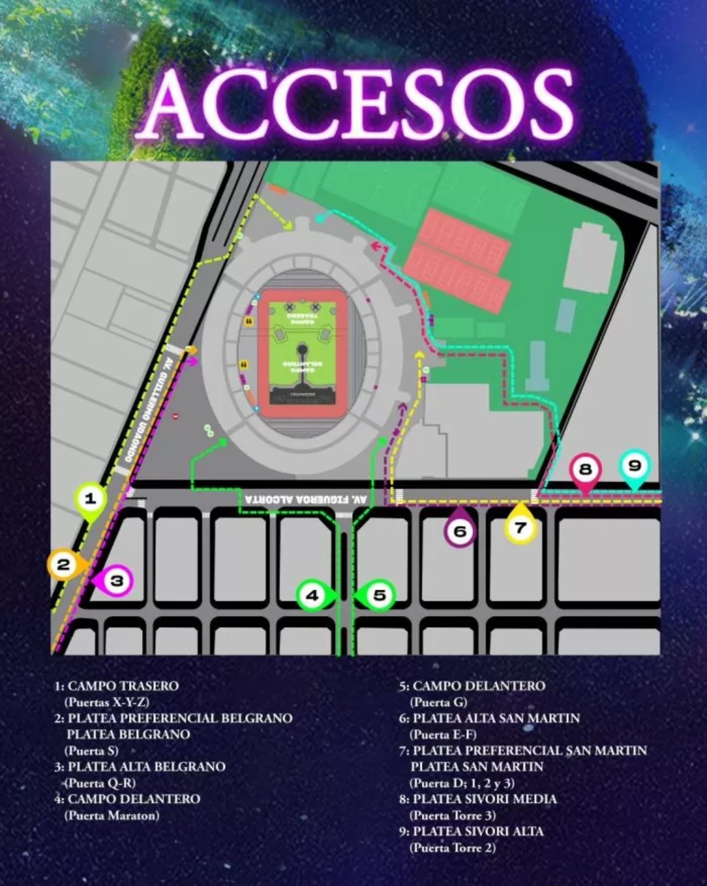

ULTIMAS NOVEDADES SOBRE LA BANDA
Si algo faltaba para que no quedaran dudas de que los shows de Coldplay en River están recontra confirmados era que se sumara un nuevo invitado. A través de sus redes sociales, la banda mostró un intercambio de mensajes entre Chris Martin y Jin de BTS, en las que el cantante lo convoca para que interpreten juntos “The Astronaut”, una canción en colaboración que lanzarán este sábado, en el recital del 28 de octubre en el Monumental que será transmitido en salas de cine alrededor del mundo
Donde Estaran Realizando sus conciertos en Argentina
La info completa podràs encontrarla en la pàgina oficial Ir allì
¿Cómo son los accesos al estadio de River? ¿A qué hora se presenta Zoe Gotusso y H.E.R?
Las puertas del estadio Monumental se abrirán a las 17.00 horas. El show de Zoe Gotusso comenzará a las 19.15 horas, H.E.R. lo hará a las 20.00 horas y Coldplay saltará al escenario a las 21.15
